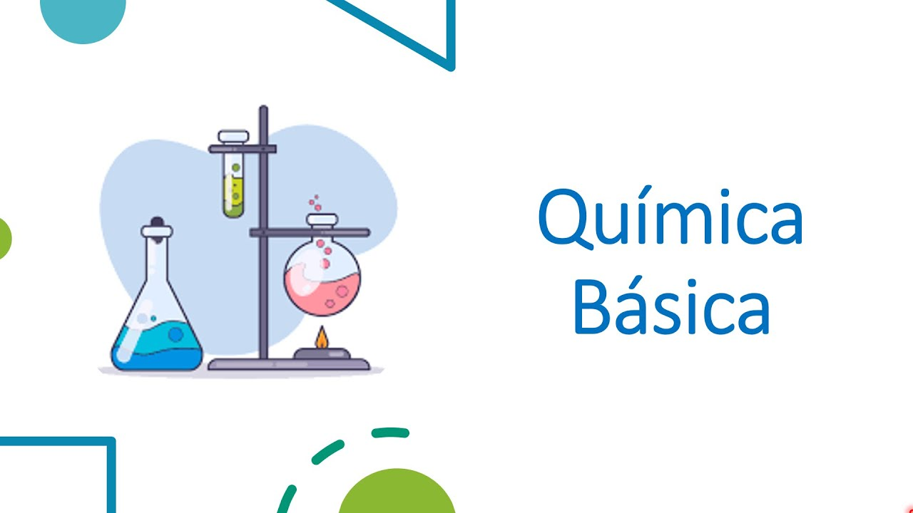

Ingeniería en Sistemas Computacionales
Universidad Politécnica de Tulancingo
PRIMER CICLO DE FORMACIÓN
Primer Cuatrimestre
INGLÉS I 5-30-6
IN1-LC
Introducción al idioma inglés, enfocado en habilidades básicas de comunicación, además de incluir vocabulario básico y reglas gramaticales.
Calificación: 10

QUÍMICA BÁSICA 5-30-6
QUB-FC
QUÍMICA BÁSICA 5-30-6
QUB-FC
Principios básicos de la quimica, además de todos los elementos de la tabla periódica y composiciones de las mismas.
Calificación: 10
ÁLGEBRA LINEAL 6-60-7
ALL-FC
Se estudian matrices, vectores, espacios vectoriales, sistemas de ecuaciones lineales y transformaciones lineales, entre otros temas relacionados.
Calificación: 10
INTRODUCCIÓN A LA PROGRAMACIÓN 6-60-7
INP-FC
Curso de inicio a los conceptos básicos de programación, donde se abordan temas como lógica, algoritmos, y estructuras de control.
Calificación: 10
INTRODUCCIÓN A LAS TECNOLOGÍAS DE INFORMACIÓN 4-60-4
ITI-FC
Exploración de los fundamentos de las TI, incluyendo hardware, software, redes y su papel en los sistemas de información.
Calificación: 10
HERRAMIENTAS OFIMÁTICAS 4-60-4
HEO-LC
Capacitación en el uso de software de oficina, como procesadores de texto, hojas de cálculo y programas de presentaciones.
Calificación: 9
EXPRESIÓN ORAL Y ESCRITA I 5-30-6
EOH-LC
Desarrollo de habilidades de comunicación oral y escrita en español, con un enfoque en la claridad y efectividad.
Calificación: 10
Segundo Cuatrimestre
INGLÉS II 5-30-6
IN2-LC
Continuación del desarrollo en el aprendizaje del inglés, avanzando en las habilidades de comunicación.
Calificación: 10
DESARROLLO HUMANO Y VALORES 3-60-4
DHV-CE
Estudio de la ética, la responsabilidad y el crecimiento personal dentro del entorno profesional y social.
Calificación: 10
FUNCIONES MATEMÁTICAS 4-75-5
FUM-FC
Curso enfocado en funciones matemáticas básicas aplicables a la ingeniería y las ciencias.
Calificación: 10

FÍSICA 4-75-5
FIS-FC
Introducción a los conceptos fundamentales de la física, tales como la mecánica y las leyes del movimiento.
Calificación: 9
ELECTRICIDAD Y MAGNETISMO 3-60-4
ELM-FC
Estudio de los principios de la electricidad y el magnetismo, incluyendo conceptos como corriente, voltaje, y campos magnéticos.
Calificación: 10
MATEMÁTICAS BÁSICAS PARA COMPUTACIÓN 8-120-8
MBC-FC
Curso de matemáticas aplicadas al ámbito de la computación, incluyendo álgebra y cálculo básico.
Calificación: 10

ARQUITECTURA DE COMPUTADORAS 8-120-8
ARC-FC
Estudio de los componentes internos de una computadora, incluyendo procesadores, memoria y sistemas de almacenamiento.
Calificación: 9
Tercer Cuatrimestre
INGLÉS III 5-30-6
IN3-LC
Continuación del aprendizaje del inglés, aumentando el nivel de complejidad en las habilidades comunicativas.
Calificación: 9
INTELIGENCIA EMOCIONAL Y MANEJO DE CONFLICTOS 3-60-4
IEM-CE
Desarrollo de habilidades para gestionar emociones y resolver conflictos en el ámbito personal y profesional.
Calificación: 10
CÁLCULO DIFERENCIAL 4-75-5
CAD-FC
Introducción al cálculo diferencial, abarcando límites, derivadas y aplicaciones.
Calificación: 9
PROBABILIDAD Y ESTADÍSTICA 5-30-6
PRE-FC
Curso básico de estadística y probabilidad, aplicados a la toma de decisiones y análisis de datos.
Calificación: 8

PROGRAMACIÓN 7-120-8
PRO-FC
Curso que se adentra más en técnicas de programación, estructuras de datos y desarrollo de software.
Calificación: 10
INTRODUCCIÓN A REDES 5-30-6
INR-FC
Fundamentos de redes de computadoras, incluyendo modelos de referencia y tecnologías de comunicación.
Calificación: 9
MANTENIMIENTO A EQUIPO DE CÓMPUTO 5-75-6
MEC-FC
Enseñanza de técnicas para el mantenimiento y reparación de equipos de cómputo.
Calificación: 10
SEGUNDO CICLO DE FORMACIÓN
Cuarto Cuatrimestre
INGLÉS IV 5-30-6
IN4-LC
Nivel avanzado de inglés, mejorando tanto las habilidades orales como escritas.
Calificación: 9
HABILIDADES COGNITIVAS Y CREATIVIDAD 3-60-4
HCC-CE
Fomento de la creatividad y el desarrollo de habilidades cognitivas para la resolución de problemas.
Calificación: 9
CÁLCULO INTEGRAL 4-60-4
CAI-FC
Curso que continúa con el estudio del cálculo, centrándose en las integrales y sus aplicaciones.
Calificación: 9
INGENIERÍA DE SOFTWARE 5-75-5
INS-FT
Introducción a los principios de desarrollo de software, incluyendo el ciclo de vida y las metodologías.
Calificación: 9

ESTRUCTURA DE DATOS 7-105-7
ESD-FC
Estudio de cómo organizar y manipular datos eficientemente utilizando diversas estructuras.
Calificación: 9
RUTEO Y CONMUTACIÓN 5-30-6
RUC-FT
Fundamentos de redes avanzadas, abarcando el ruteo y la conmutación de paquetes de datos.
Calificación: 9
ESTANCIA I 0-120-8
ESI-FT
Estancia realizada con el doctor José Alberto Delgado Atencio, el cual tuvo enfasis en la investigación de el funcionamiento de la luz y sus derivados.
Calificación: 10
Quinto Cuatrimestre
INGLÉS V 5-30-6
IN5-LC
Curso avanzado de inglés para mejorar las habilidades necesarias para el ámbito profesional.
Calificación: 10
ÉTICA PROFESIONAL 3-60-4
ETP-CE
Curso que se enfoca en los principios éticos en la práctica profesional, fomentando la responsabilidad y el respeto.
Calificación: 10
MATEMÁTICAS PARA INGENIERÍA I 4-75-5
MI1-FC
Curso avanzado de matemáticas orientado a problemas y aplicaciones de la ingeniería.
Calificación: 7
FÍSICA PARA INGENIERÍA 4-75-5
FII-FC
Curso de física con un enfoque práctico para la resolución de problemas de ingeniería.
Calificación: 9
FUNDAMENTOS DE PROGRAMACIÓN ORIENTADA A OBJETOS 6-30-6
FPO-FT
Introducción a la programación orientada a objetos, con conceptos como clases, objetos y herencia.
Calificación: 8
ESCALAMIENTO DE REDES 5-75-6
ESR-FT
Curso sobre la expansión de redes, diseño y optimización para manejar más dispositivos y tráfico.
Calificación: 9

BASE DE DATOS 7-120-8
BAD-FT
Estudio de los conceptos fundamentales en bases de datos, como diseño, implementación y consultas SQL.
Calificación: 9
Sexto Cuatrimestre
INGLÉS VI 5-30-6
IN6-LC
Curso de inglés, donde se perfeccionan las habilidades de comunicación en un contexto profesional.
Calificación: 8
HABILIDADES GERENCIALES 3-60-4
HAG-CE
Curso sobre liderazgo, toma de decisiones y gestión en equipos de trabajo.
Calificación: 10
MATEMÁTICAS PARA INGENIERÍA II 5-30-6
MI2-FC
Continuación de las matemáticas aplicadas a la ingeniería, abarcando temas más avanzados.
Calificación: 9

SISTEMAS OPERATIVOS 5-30-6
SIO-FT
Estudio de los sistemas operativos, su funcionamiento, administración y uso eficiente.
Calificación: 9
PROGRAMACIÓN ORIENTADA A OBJETOS 5-30-6
POO-FT
Curso avanzado sobre programación orientada a objetos, abarcando técnicas más complejas de desarrollo.
Calificación: 10
INTERCONEXIÓN DE REDES 5-75-6
INR-FT
Curso sobre el funcionamiento de la interconexión de redes y los protocolos que la soportan.
Calificación: 8

ADMINISTRACIÓN DE BASE DE DATOS 6-60-7
ABD-FT
Gestión y administración de bases de datos, enfocándose en seguridad, optimización y rendimiento.
Calificación: 9